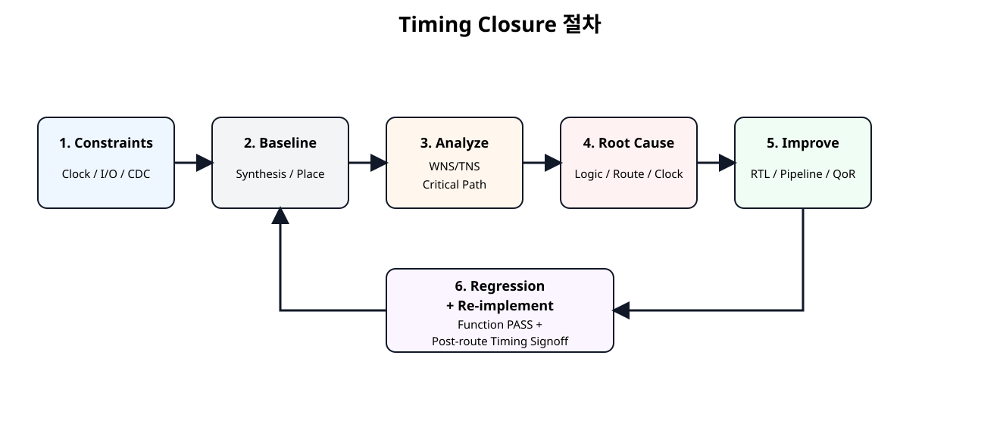
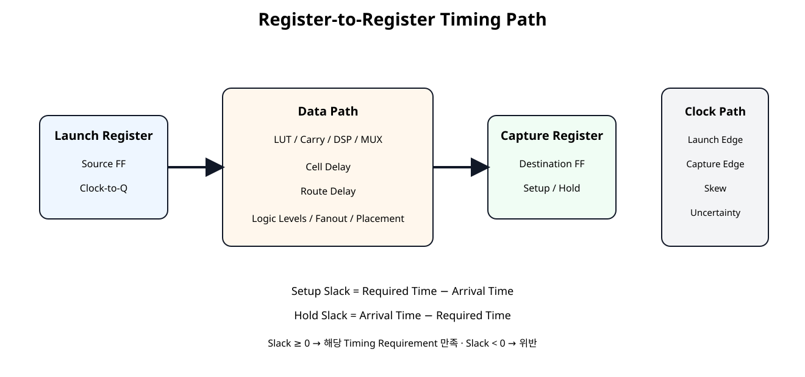
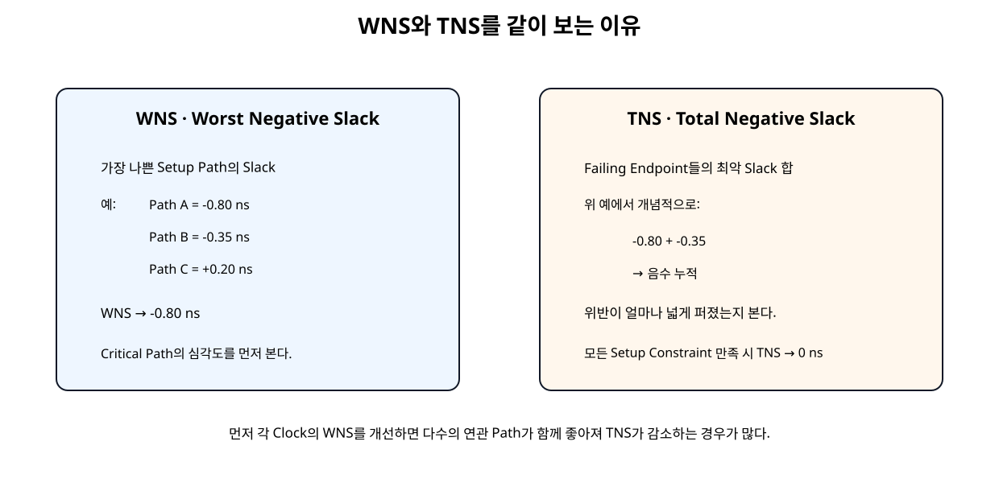
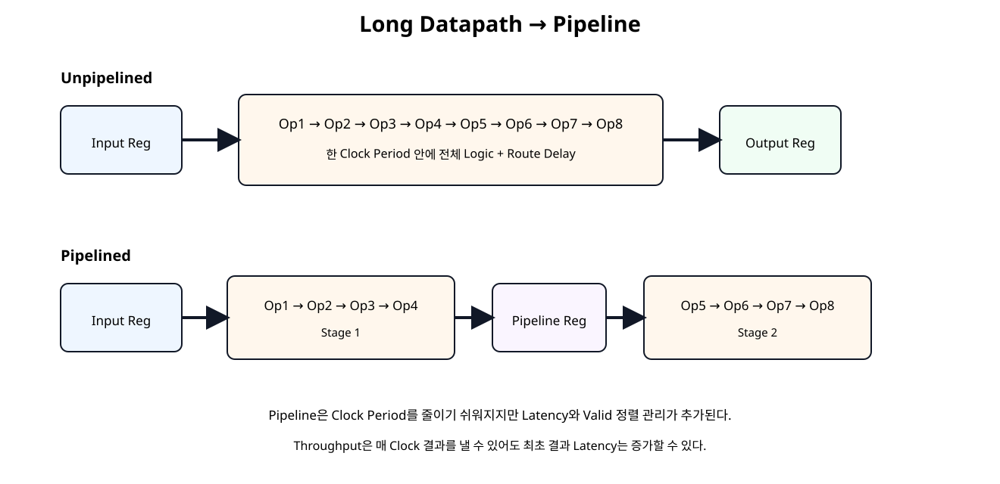

전체 학습 위치
이번 장의 목표

원본 보기 ↗
Timing Closure란 무엇인가
Timing Closure(타이밍 클로저, 모든 Timing 요구를 만족시키는 상태)는 단순히 WNS 하나를 양수로 만드는 작업이 아니다. Clock/CDC/I/O Constraint가 정확해야 하고 Setup/Hold 위반이 없어야 하며, 실제 Place/Route 결과에서 요구 Clock을 만족해야 한다.
Constraint가 먼저다
Constraint가 틀린 상태에서 Slack 숫자를 개선하면 잘못된 문제를 최적화하게 된다. 먼저 Clock 정의, Generated Clock, Clock 관계, I/O Delay, CDC Exception을 검토한다.
set_false_path 또는 set_multicycle_path를 추가하면 안 된다.Clock Constraint
Basys3의 W5 100 MHz Clock은 Period 10 ns이다.
create_clock \
-name sys_clk \
-period 10.000 \
-waveform {0.000 5.000} \
[get_ports clk]MMCM/PLL 등으로 생성한 Clock은 Master Clock과의 관계를 create_generated_clock으로 표현한다.
Timing Path 종류
| Path | 의미 |
|---|---|
| Input → Register | 외부 Device에서 FPGA 내부 Register까지 |
| Register → Register | 내부 동기회로의 핵심 Timing Path |
| Register → Output | FPGA Register에서 외부 Device까지 |
| Input → Output | 조합 I/O Path |
Register-to-Register Path

원본 보기 ↗
Setup 분석
Setup은 Data가 다음 Capture Edge 전에 충분히 일찍 도착하는지 보는 Max Delay 분석이다.
Slack이 음수라면 Data Path가 주어진 Clock Budget보다 늦었다는 뜻이다.
Hold 분석
Hold는 Data가 Capture Edge 직후 너무 빨리 바뀌지 않는지 보는 Min Delay 분석이다.
Setup과 Hold는 같은 Path라도 Delay 계산 방향과 Clock Delay 선택이 다르므로 별도로 확인한다.
Slack 읽는 법
| Slack | 의미 |
|---|---|
> 0 ns | 해당 Timing Requirement 만족 |
= 0 ns | Margin 없이 경계 |
< 0 ns | Timing Violation |
Slack이 양수라고 해서 전체 Design이 Timing Closure된 것은 아니다. 모든 관련 Clock/Path를 확인해야 한다.
WNS
WNS(Worst Negative Slack, 최악의 음수 여유)는 Setup/Recovery Max Delay 분석에서 가장 나쁜 Slack이다. 이름에 Negative가 들어가지만 Timing을 만족하면 값 자체는 양수가 될 수 있다.
TNS

원본 보기 ↗
모든 Setup 관련 Constraint가 만족되면 TNS는 0 ns이다. AMD는 Timing Closure 시 각 Clock의 WNS를 우선 개선하면 다수의 연관 Path가 함께 좋아져 TNS가 줄어드는 경우가 많다고 설명한다.
WHS / THS
Hold 영역에서는 WHS(Worst Hold Slack, 최악 Hold 여유)와 THS(Total Hold Slack, Hold 위반 누적)를 본다.
Hold → WHS / THS
Synthesis Timing과 Post-route Timing
Synthesis 직후 Timing Report의 Net Delay는 Placement/Route가 완료되지 않았기 때문에 추정값이다. Route 완료 후에는 실제 Routing 정보를 기반으로 Delay가 계산된다.
report_timing_summary를 기준으로 한다.Critical Path
Critical Path는 현재 요구 조건에서 Slack이 가장 나쁜 Path다. Startpoint와 Endpoint 이름만 보지 말고 Path Requirement, Datapath Delay, Cell Delay, Route Delay, Clock Skew, Clock Uncertainty를 함께 본다.
Cell Delay와 Route Delay
| 주요 원인 | 접근 |
|---|---|
| Logic Delay 비중 큼 | Logic Levels, 연산 구조, Pipeline 검토 |
| Route Delay 비중 큼 | Fanout, Placement, Congestion, Physical Optimization 검토 |
| Clock Skew 큼 | Clocking 구조와 Constraint 검토 |
| Uncertainty 큼 | Clock 정의와 실제 Clock 품질 검토 |
Logic Levels
report_design_analysis -setup -logic_level_distribution으로 Worst Path의 Logic Level 분포를 볼 수 있다. Logic Level이 많으면 Placement 전에 RTL 구조 자체를 먼저 개선하는 것이 효율적인 경우가 많다.
실습용 긴 Data Path
이번 Timing Lab은 Input Register와 Output Register 사이에 8개의 의존 연산을 둔다. 연산 하나의 결과가 다음 연산 입력으로 이어지므로 한 Clock Period의 Logic Depth가 길어진다.
Unpipelined RTL
module timing_chain_unpipelined (
input wire clk,
input wire resetn,
input wire [31:0] a_i,
input wire [31:0] b_i,
input wire [31:0] c_i,
input wire [31:0] d_i,
input wire [31:0] e_i,
input wire [31:0] f_i,
input wire [31:0] g_i,
input wire [31:0] h_i,
input wire valid_i,
output reg [31:0] result_o,
output reg valid_o
);
// Input registers create a true internal register-to-register timing path.
reg [31:0] a_q;
reg [31:0] b_q;
reg [31:0] c_q;
reg [31:0] d_q;
reg [31:0] e_q;
reg [31:0] f_q;
reg [31:0] g_q;
reg [31:0] h_q;
reg valid_q;
// Dependent logic chain.
// Each result feeds the next operation, so logic depth matters.
wire [31:0] t1;
wire [31:0] t2;
wire [31:0] t3;
wire [31:0] t4;
wire [31:0] t5;
wire [31:0] t6;
wire [31:0] t7;
wire [31:0] t8;
assign t1 = a_q + b_q;
assign t2 = t1 ^ {c_q[15:0], c_q[31:16]};
assign t3 = t2 + d_q;
assign t4 = {t3[30:0], t3[31]} ^ e_q;
assign t5 = t4 + f_q;
assign t6 = t5 ^ {g_q[7:0], g_q[31:8]};
assign t7 = t6 + h_q;
assign t8 = (t7 ^ {t7[3:0], t7[31:4]}) + 32'h1357_9BDF;
always @(posedge clk) begin
if (!resetn) begin
a_q <= 32'h0000_0000;
b_q <= 32'h0000_0000;
c_q <= 32'h0000_0000;
d_q <= 32'h0000_0000;
e_q <= 32'h0000_0000;
f_q <= 32'h0000_0000;
g_q <= 32'h0000_0000;
h_q <= 32'h0000_0000;
valid_q <= 1'b0;
result_o <= 32'h0000_0000;
valid_o <= 1'b0;
end else begin
a_q <= a_i;
b_q <= b_i;
c_q <= c_i;
d_q <= d_i;
e_q <= e_i;
f_q <= f_i;
g_q <= g_i;
h_q <= h_i;
valid_q <= valid_i;
result_o <= t8;
valid_o <= valid_q;
end
end
endmodule
이 구조는 Latency가 짧지만 모든 연산 Delay를 한 Clock Period 안에서 만족해야 한다.
Pipelined RTL

원본 보기 ↗
module timing_chain_pipelined (
input wire clk,
input wire resetn,
input wire [31:0] a_i,
input wire [31:0] b_i,
input wire [31:0] c_i,
input wire [31:0] d_i,
input wire [31:0] e_i,
input wire [31:0] f_i,
input wire [31:0] g_i,
input wire [31:0] h_i,
input wire valid_i,
output reg [31:0] result_o,
output reg valid_o
);
// Stage 0 input registers.
reg [31:0] a_q;
reg [31:0] b_q;
reg [31:0] c_q;
reg [31:0] d_q;
reg [31:0] e_q;
reg [31:0] f_q;
reg [31:0] g_q;
reg [31:0] h_q;
reg valid_q;
// First half of the original dependent chain.
wire [31:0] s1_t1;
wire [31:0] s1_t2;
wire [31:0] s1_t3;
wire [31:0] s1_t4;
assign s1_t1 = a_q + b_q;
assign s1_t2 = s1_t1 ^ {c_q[15:0], c_q[31:16]};
assign s1_t3 = s1_t2 + d_q;
assign s1_t4 = {s1_t3[30:0], s1_t3[31]} ^ e_q;
// Pipeline registers split the long combinational path.
reg [31:0] mid_data_q;
reg [31:0] f_mid_q;
reg [31:0] g_mid_q;
reg [31:0] h_mid_q;
reg mid_valid_q;
// Second half of the chain.
wire [31:0] s2_t5;
wire [31:0] s2_t6;
wire [31:0] s2_t7;
wire [31:0] s2_t8;
assign s2_t5 = mid_data_q + f_mid_q;
assign s2_t6 = s2_t5 ^ {g_mid_q[7:0], g_mid_q[31:8]};
assign s2_t7 = s2_t6 + h_mid_q;
assign s2_t8 = (s2_t7 ^ {s2_t7[3:0], s2_t7[31:4]}) + 32'h1357_9BDF;
always @(posedge clk) begin
if (!resetn) begin
a_q <= 32'h0000_0000;
b_q <= 32'h0000_0000;
c_q <= 32'h0000_0000;
d_q <= 32'h0000_0000;
e_q <= 32'h0000_0000;
f_q <= 32'h0000_0000;
g_q <= 32'h0000_0000;
h_q <= 32'h0000_0000;
valid_q <= 1'b0;
mid_data_q <= 32'h0000_0000;
f_mid_q <= 32'h0000_0000;
g_mid_q <= 32'h0000_0000;
h_mid_q <= 32'h0000_0000;
mid_valid_q <= 1'b0;
result_o <= 32'h0000_0000;
valid_o <= 1'b0;
end else begin
a_q <= a_i;
b_q <= b_i;
c_q <= c_i;
d_q <= d_i;
e_q <= e_i;
f_q <= f_i;
g_q <= g_i;
h_q <= h_i;
valid_q <= valid_i;
mid_data_q <= s1_t4;
f_mid_q <= f_q;
g_mid_q <= g_q;
h_mid_q <= h_q;
mid_valid_q <= valid_q;
result_o <= s2_t8;
valid_o <= mid_valid_q;
end
end
endmodule
Latency와 Throughput
| 항목 | Unpipelined | Pipelined |
|---|---|---|
| 조합 경로 | 길다 | 분할됨 |
| Clock 요구 대응 | 불리할 수 있음 | 유리할 수 있음 |
| 최초 결과 Latency | 짧음 | 증가 |
| Steady-state Throughput | 매 Clock 가능 | 매 Clock 가능 |
| 제어 복잡도 | 낮음 | Valid/Data 정렬 필요 |
Basys3 Implementation 구조
Data를 수백 개 외부 Pin으로 만들지 않고 내부 Pattern Source를 사용한다. Board Top은 Reset Polarity Adapter와 Implementation Top을 연결만 한다.
## SoC 22 Basys3 implementation pin constraints
## 100 MHz clock
set_property -dict { PACKAGE_PIN W5 IOSTANDARD LVCMOS33 } [get_ports clk]
## Center push button, active high.
## reset_active_high_to_active_low converts btnC to internal resetn.
set_property -dict { PACKAGE_PIN U18 IOSTANDARD LVCMOS33 } [get_ports btnC]
## LEDs 0..15
set_property -dict { PACKAGE_PIN U16 IOSTANDARD LVCMOS33 } [get_ports {led_o[0]}]
set_property -dict { PACKAGE_PIN E19 IOSTANDARD LVCMOS33 } [get_ports {led_o[1]}]
set_property -dict { PACKAGE_PIN U19 IOSTANDARD LVCMOS33 } [get_ports {led_o[2]}]
set_property -dict { PACKAGE_PIN V19 IOSTANDARD LVCMOS33 } [get_ports {led_o[3]}]
set_property -dict { PACKAGE_PIN W18 IOSTANDARD LVCMOS33 } [get_ports {led_o[4]}]
set_property -dict { PACKAGE_PIN U15 IOSTANDARD LVCMOS33 } [get_ports {led_o[5]}]
set_property -dict { PACKAGE_PIN U14 IOSTANDARD LVCMOS33 } [get_ports {led_o[6]}]
set_property -dict { PACKAGE_PIN V14 IOSTANDARD LVCMOS33 } [get_ports {led_o[7]}]
set_property -dict { PACKAGE_PIN V13 IOSTANDARD LVCMOS33 } [get_ports {led_o[8]}]
set_property -dict { PACKAGE_PIN V3 IOSTANDARD LVCMOS33 } [get_ports {led_o[9]}]
set_property -dict { PACKAGE_PIN W3 IOSTANDARD LVCMOS33 } [get_ports {led_o[10]}]
set_property -dict { PACKAGE_PIN U3 IOSTANDARD LVCMOS33 } [get_ports {led_o[11]}]
set_property -dict { PACKAGE_PIN P3 IOSTANDARD LVCMOS33 } [get_ports {led_o[12]}]
set_property -dict { PACKAGE_PIN N3 IOSTANDARD LVCMOS33 } [get_ports {led_o[13]}]
set_property -dict { PACKAGE_PIN P1 IOSTANDARD LVCMOS33 } [get_ports {led_o[14]}]
set_property -dict { PACKAGE_PIN L1 IOSTANDARD LVCMOS33 } [get_ports {led_o[15]}]
100 MHz Baseline
정상 Basys3 기준은 10 ns Clock이다.
vivado -mode batch \
-source scripts/run_timing_lab.tcl \
-tclargs unpipelined 10.0
vivado -mode batch \
-source scripts/run_timing_lab.tcl \
-tclargs pipelined 10.0두 구조가 모두 100 MHz에서 만족할 수도 있다. 실제 결과를 보고 판단한다.
200 MHz Stress Constraint
5 ns Constraint는 구조 차이를 더 분명하게 관찰하기 위한 Stress 실험이다.
자동 Timing Report
# SoC 22 - Basys3 Timing Lab
#
# Usage examples:
# vivado -mode batch -source scripts/run_timing_lab.tcl \
# -tclargs unpipelined 10.0
#
# vivado -mode batch -source scripts/run_timing_lab.tcl \
# -tclargs pipelined 5.0
#
# arg0 : unpipelined | pipelined
# arg1 : clock period in ns
if {$argc < 2} {
puts "ERROR: usage: run_timing_lab.tcl <unpipelined|pipelined> <period_ns>"
exit 1
}
set variant [lindex $argv 0]
set period_ns [lindex $argv 1]
if {$variant eq "unpipelined"} {
set top_name timing_lab_unpipelined_basys3_top
set core_file timing_chain_unpipelined.v
} elseif {$variant eq "pipelined"} {
set top_name timing_lab_pipelined_basys3_top
set core_file timing_chain_pipelined.v
} else {
puts "ERROR: unknown variant '$variant'"
exit 1
}
set script_dir [file dirname [file normalize [info script]]]
set root_dir [file normalize [file join $script_dir ".."]]
set rtl_dir [file join $root_dir "rtl"]
set xdc_dir [file join $root_dir "constraints"]
set run_tag "${variant}_${period_ns}ns"
set out_dir [file normalize [file join $root_dir "reports" $run_tag]]
file mkdir $out_dir
create_project -in_memory -part xc7a35tcpg236-1
read_verilog [file join $rtl_dir "reset_active_high_to_active_low.v"]
read_verilog [file join $rtl_dir "timing_pattern_source.v"]
read_verilog [file join $rtl_dir "timing_result_sink.v"]
read_verilog [file join $rtl_dir $core_file]
if {$variant eq "unpipelined"} {
read_verilog [file join $rtl_dir "timing_lab_unpipelined_impl_top.v"]
read_verilog [file join $rtl_dir "timing_lab_unpipelined_basys3_top.v"]
} else {
read_verilog [file join $rtl_dir "timing_lab_pipelined_impl_top.v"]
read_verilog [file join $rtl_dir "timing_lab_pipelined_basys3_top.v"]
}
synth_design \
-top $top_name \
-part xc7a35tcpg236-1
read_xdc [file join $xdc_dir "basys3_timing_lab_pins.xdc"]
create_clock \
-name sys_clk \
-period $period_ns \
[get_ports clk]
report_methodology \
-file [file join $out_dir "01_methodology_synth.rpt"]
report_timing_summary \
-delay_type min_max \
-report_unconstrained \
-max_paths 10 \
-file [file join $out_dir "02_timing_summary_post_synth.rpt"]
report_design_analysis \
-max_paths 50 \
-setup \
-logic_level_distribution \
-file [file join $out_dir "03_design_analysis_post_synth.rpt"]
opt_design
place_design
report_timing_summary \
-delay_type min_max \
-report_unconstrained \
-max_paths 10 \
-file [file join $out_dir "04_timing_summary_post_place.rpt"]
phys_opt_design
route_design
report_timing_summary \
-delay_type min_max \
-report_unconstrained \
-max_paths 20 \
-file [file join $out_dir "05_timing_summary_post_route.rpt"]
report_timing \
-delay_type max \
-max_paths 20 \
-nworst 1 \
-sort_by group \
-input_pins \
-file [file join $out_dir "06_worst_setup_paths.rpt"]
report_timing \
-delay_type min \
-max_paths 20 \
-nworst 1 \
-sort_by group \
-input_pins \
-file [file join $out_dir "07_worst_hold_paths.rpt"]
report_design_analysis \
-max_paths 50 \
-setup \
-logic_level_distribution \
-file [file join $out_dir "08_design_analysis_post_route.rpt"]
report_qor_suggestions \
-file [file join $out_dir "09_qor_suggestions.rpt"]
report_utilization \
-hierarchical \
-file [file join $out_dir "10_utilization.rpt"]
report_clock_interaction \
-file [file join $out_dir "11_clock_interaction.rpt"]
report_methodology \
-file [file join $out_dir "12_methodology_post_route.rpt"]
write_checkpoint -force \
[file join $out_dir "${run_tag}_post_route.dcp"]
puts ""
puts "SoC 22 timing run complete."
puts "Variant : $variant"
puts "Clock period : $period_ns ns"
puts "Reports : $out_dir"
puts ""
puts "Use the post-route Timing Summary for final comparison."
각 Case는 Synthesis → Opt → Place → Phys Opt → Route 후 Timing Summary, Worst Setup/Hold, Design Analysis, QoR Suggestions, Utilization, Clock Interaction, Methodology Report를 저장한다.
Post-route Timing Signoff
최종 비교 파일은 각 Case의 다음 Report다.
reports/<variant>_<period>ns/
└── 05_timing_summary_post_route.rptSetup WNS/TNS, Hold WHS/THS, Failing Endpoint, Unconstrained Paths를 먼저 확인한다.
Report Design Analysis
Timing Summary가 “얼마나 실패했는가”를 보여준다면 Report Design Analysis는 Worst Path의 Logic Level, Delay 특성, Routing Complexity를 분석해 “왜 실패했는가”를 찾는 데 유용하다.
QoR Suggestions
report_qor_suggestions는 Timing/Clocking/Congestion/Netlist 문제를 분석해 개선 후보를 제시한다. 하지만 제안 적용 전에 RTL과 Constraint의 본질적인 문제를 먼저 확인한다.
False Path 주의
set_false_path는 기능적으로 Timing 관계가 없는 Path를 Timing Analysis에서 제외하는 Constraint다.
Multicycle Path 주의
set_multicycle_path는 설계 기능상 Data가 한 Clock이 아니라 여러 Clock 후 Capture되어도 되는 경우에만 사용한다.
단순히 WNS가 음수 → Multicycle 사용 금지
Hold Fix 주의
Hold는 Data가 너무 빨리 도착하는 문제다. Pipeline은 주로 긴 Setup Path 개선 기법이며 Hold 문제를 같은 방식으로 해석하면 안 된다. Hold Fix가 Setup을 악화시키지 않는지도 함께 확인한다.
SoC 21 Regression과 연결
`timescale 1ns / 1ps
module tb_timing_lab_compare;
logic clk = 1'b0;
logic resetn = 1'b0;
logic [31:0] a_i;
logic [31:0] b_i;
logic [31:0] c_i;
logic [31:0] d_i;
logic [31:0] e_i;
logic [31:0] f_i;
logic [31:0] g_i;
logic [31:0] h_i;
logic valid_i;
wire [31:0] unpipelined_result_o;
wire unpipelined_valid_o;
wire [31:0] pipelined_result_o;
wire pipelined_valid_o;
int errors = 0;
int checks = 0;
logic [31:0] expected_unpipelined_q[$];
logic [31:0] expected_pipelined_q[$];
always #5 clk = ~clk;
timing_lab_compare_top dut (
.clk(clk),
.resetn(resetn),
.a_i(a_i),
.b_i(b_i),
.c_i(c_i),
.d_i(d_i),
.e_i(e_i),
.f_i(f_i),
.g_i(g_i),
.h_i(h_i),
.valid_i(valid_i),
.unpipelined_result_o(unpipelined_result_o),
.unpipelined_valid_o(unpipelined_valid_o),
.pipelined_result_o(pipelined_result_o),
.pipelined_valid_o(pipelined_valid_o)
);
function automatic logic [31:0] reference_model(
input logic [31:0] a,
input logic [31:0] b,
input logic [31:0] c,
input logic [31:0] d,
input logic [31:0] e,
input logic [31:0] f,
input logic [31:0] g,
input logic [31:0] h
);
logic [31:0] t1;
logic [31:0] t2;
logic [31:0] t3;
logic [31:0] t4;
logic [31:0] t5;
logic [31:0] t6;
logic [31:0] t7;
logic [31:0] t8;
begin
t1 = a + b;
t2 = t1 ^ {c[15:0], c[31:16]};
t3 = t2 + d;
t4 = {t3[30:0], t3[31]} ^ e;
t5 = t4 + f;
t6 = t5 ^ {g[7:0], g[31:8]};
t7 = t6 + h;
t8 = (t7 ^ {t7[3:0], t7[31:4]}) + 32'h1357_9BDF;
reference_model = t8;
end
endfunction
task automatic drive_case(
input logic [31:0] a,
input logic [31:0] b,
input logic [31:0] c,
input logic [31:0] d,
input logic [31:0] e,
input logic [31:0] f,
input logic [31:0] g,
input logic [31:0] h
);
begin
@(negedge clk);
a_i = a;
b_i = b;
c_i = c;
d_i = d;
e_i = e;
f_i = f;
g_i = g;
h_i = h;
valid_i = 1'b1;
expected_unpipelined_q.push_back(
reference_model(a, b, c, d, e, f, g, h)
);
expected_pipelined_q.push_back(
reference_model(a, b, c, d, e, f, g, h)
);
end
endtask
task automatic stop_input;
begin
@(negedge clk);
valid_i = 1'b0;
end
endtask
always @(posedge clk) begin
if (resetn && unpipelined_valid_o) begin
checks++;
if (expected_unpipelined_q.size() == 0) begin
errors++;
$error("UNPIPELINED: unexpected valid");
end else if (
unpipelined_result_o !== expected_unpipelined_q[0]
) begin
errors++;
$error(
"UNPIPELINED mismatch actual=%08h expected=%08h",
unpipelined_result_o,
expected_unpipelined_q[0]
);
expected_unpipelined_q.pop_front();
end else begin
$display(
"PASS: unpipelined result=%08h",
unpipelined_result_o
);
expected_unpipelined_q.pop_front();
end
end
if (resetn && pipelined_valid_o) begin
checks++;
if (expected_pipelined_q.size() == 0) begin
errors++;
$error("PIPELINED: unexpected valid");
end else if (
pipelined_result_o !== expected_pipelined_q[0]
) begin
errors++;
$error(
"PIPELINED mismatch actual=%08h expected=%08h",
pipelined_result_o,
expected_pipelined_q[0]
);
expected_pipelined_q.pop_front();
end else begin
$display(
"PASS: pipelined result=%08h",
pipelined_result_o
);
expected_pipelined_q.pop_front();
end
end
end
initial begin
a_i = 0;
b_i = 0;
c_i = 0;
d_i = 0;
e_i = 0;
f_i = 0;
g_i = 0;
h_i = 0;
valid_i = 0;
repeat (5) @(posedge clk);
resetn = 1'b1;
drive_case(
32'h0000_0001,
32'h0000_0002,
32'h1234_5678,
32'h0000_0010,
32'hA5A5_5A5A,
32'h0102_0304,
32'h89AB_CDEF,
32'h0000_1000
);
drive_case(
32'hFFFF_FFFF,
32'h0000_0001,
32'h0F0F_F0F0,
32'h1111_1111,
32'h2222_2222,
32'h3333_3333,
32'h4444_4444,
32'h5555_5555
);
repeat (20) begin
drive_case(
$urandom(),
$urandom(),
$urandom(),
$urandom(),
$urandom(),
$urandom(),
$urandom(),
$urandom()
);
end
stop_input();
repeat (8) @(posedge clk);
if (expected_unpipelined_q.size() != 0) begin
errors++;
$error(
"Unpipelined expected queue not empty: %0d entries",
expected_unpipelined_q.size()
);
end
if (expected_pipelined_q.size() != 0) begin
errors++;
$error(
"Pipelined expected queue not empty: %0d entries",
expected_pipelined_q.size()
);
end
$display("");
$display("SOC22 CHECK COUNT : %0d", checks);
$display("SOC22 ERROR COUNT : %0d", errors);
if (errors == 0) begin
$display("SOC22 FUNCTIONAL REGRESSION: PASS");
end else begin
$fatal(
1,
"SOC22 FUNCTIONAL REGRESSION: FAIL (%0d errors)",
errors
);
end
#30;
$finish;
end
endmodule
Pipeline 추가 후 결과 Latency는 달라졌지만 Reference Model 기준 기능은 동일해야 한다. 따라서 Timing 최적화와 Functional Regression을 반드시 같이 수행한다.
NPU / DSP 연결
향후 MAC Array, Accumulator Tree, Activation, Address Generation 같은 NPU Datapath에서도 동일한 원칙을 사용한다.
오류 점검
| 증상 | 원인 후보 | 확인 |
|---|---|---|
| WNS가 음수 | 긴 Logic/Route/Clock 문제 | Worst Setup Path |
| TNS가 매우 큼 | 여러 Endpoint가 연쇄 실패 | Clock별 WNS부터 개선 |
| Post-synth는 PASS, Post-route는 FAIL | 실제 Route Delay 증가 | Route Delay 비율 |
| Logic Delay 비율 큼 | Logic Level 과다 | Pipeline/RTL 구조 |
| Route Delay 비율 큼 | Fanout/Placement/Congestion | Design Analysis/QoR |
| Hold만 실패 | Min Delay 문제 | WHS/THS |
| Exception 추가 후 PASS | 실제 요구를 숨겼을 가능성 | False/Multicycle 정당성 |
| Pipeline 후 기능 실패 | Latency/Valid 정렬 오류 | SoC 21 방식 Regression |
SoC 22 완료 체크리스트
- [ ] Clock Constraint를 먼저 정의한다.
- [ ] Setup과 Hold의 Slack 식을 구분한다.
- [ ] WNS와 TNS의 의미를 구분한다.
- [ ] Hold는 WHS와 THS를 확인한다.
- [ ] Synthesis Timing을 최종 Signoff로 사용하지 않는다.
- [ ] Post-route Timing Summary를 최종 기준으로 사용한다.
- [ ] Critical Path의 Cell Delay와 Route Delay를 구분한다.
- [ ] Logic Level이 많은 Path는 RTL 구조 개선을 검토한다.
- [ ] 긴 Data Path를 Pipeline으로 분할할 수 있다.
- [ ] Pipeline의 Latency 증가와 Throughput을 구분한다.
- [ ] False Path로 Negative Slack을 숨기지 않는다.
- [ ] Multicycle은 기능적으로 정당한 Path에만 적용한다.
- [ ] Timing 변경 후 Functional Regression을 다시 실행한다.
공식 매뉴얼 및 원본 근거
| 문서 | 확인 항목 |
|---|---|
| AMD UG906 · Timing Analysis · 2026.1 | Timing Signoff와 Timing Report 기본 |
| AMD UG906 · Timing Path Summary · 2026.1 | Setup/Hold Slack 공식 |
| AMD UG906 · Setup Area · 2026.1 | WNS/TNS 정의 |
| AMD UG906 · Hold Area · 2026.1 | WHS/THS 정의 |
| AMD UG906 · Report Design Analysis · 2026.1 | Logic Level, Timing/Complexity/Congestion 분석 |
| AMD UG949 · Timing Closure · 2026.1 | WNS 우선 개선과 Post-route Signoff |
| AMD UG949 · Pipelining Considerations · 2026.1 | Long Datapath 분할과 Latency Trade-off |
| AMD UG903 · Timing Constraints · 2026.1 | Clock/Generated Clock/Timing Exception Constraint |